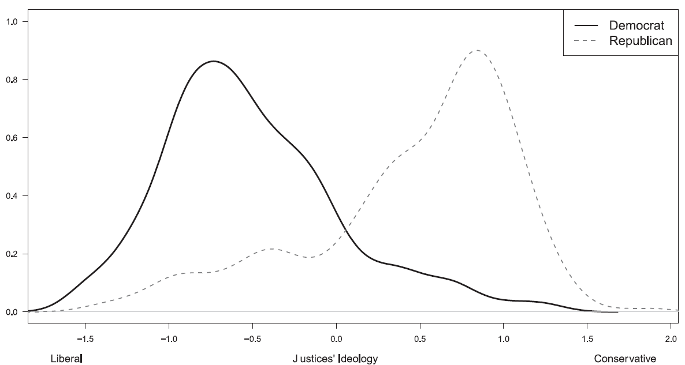
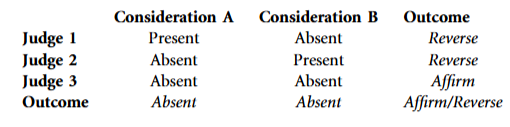
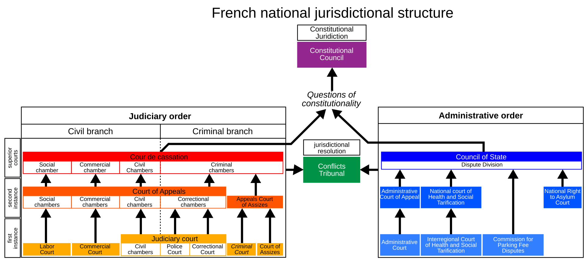

How Judges Decide II: Juries, Panels and Hierarchy
Week 4
This week
this week we look at
some diverse sources of judicial preferences
panels, the judicial hierarchy and juries
Identity and socialization
Variation in judicial preferences
some judges are more …
- ideological, partisan, competent, power-hungry, lazy, independent, ambitious, etc.
… than others
- the sources of judicial preferences are manifold: background characteristics, experience, legal and political context
Variation in judicial preferences

Ideology of Democratic and Republican State Supreme Court Justices (Gibson and Nelson 2022)
ideology estimated from campaign-contribution datasets (Bonica)
In-group bias
in experiments with the Polish public, ideological bias is driven by in-group favouritism (Kantorowicz-Reznichenko, Kantorowicz, and Weinshall 2022)
in an experiment, US state judges awarded higher punitive damages against an out-of-state defendant (Wistrich, Rachlinski, and Guthrie 2015)
but across 5 million Indian criminal cases, judges show no in-group bias by gender or religion (Ash et al. 2025)
Background and experience
US appeals judges with a daughter vote in a more feminist way on gender issues than those with only sons (Glynn and Sen 2015)
West German courts with more Nazi-tainted judges convicted fewer accused Nazi criminals (Kern and Vanberg 2024)
a law and economics training programme made US federal judges rule against regulators more often and sentence more harshly (Ash, Chen, and Naidu 2026)
Political context
local Fox News viewership causes elected judges to impose harsher sentences (Ash and Poyker 2024)
high asylum salience leads Swiss judges to decide asylum appeals less favourably (Spirig 2023)
Deciding together
most consequential decisions are not made by a single judge acting alone
the decision often runs through other people
panels: judges influencing one another
the hierarchy: courts overseen by the courts above them
juries and lay judges: citizens deciding next to or instead of professionals
Panels
Collegial courts
most important courts are collegial – they involve bargaining between multiple judges (Landa and Lax 2009; Lax and Cameron 2007)
if opinion amendments by judges are costless, the result will align with the median judge’s preferences
- if they are not, the opinion writer can pull the judgment slightly away from the median judge (Lax and Cameron 2007)
Panel aggregation paradox

voting on outcomes and voting issue by issue can give opposite results (Kornhauser and Sager 1986; Landa and Lax 2009)
either consideration is enough to reverse, so two of three judges vote to reverse
yet a majority finds each consideration absent, which means the decision is affirmed
Chair or median?
often we do not observe the dynamics behind panel decisions
key question: how influential is the panel’s opinion-writer/chair?
reviewing / challenging the chair is costly for the other panel members
Hangartner, Lauderdale, and Spirig (2025) show that in about half of Swiss Federal Administrative Court asylum cases, the panel defers to the chair (majority rule applies otherwise)
Panel effects
on US appeals panels, judges vote more ideologically when both colleagues share their appointing party (Sunstein, Schkade, and Ellman 2004)
and less ideologically when both colleagues were appointed by the other party
on the DC Circuit, majorities with one judge from the other party followed doctrine more often (Cross and Tiller 1998)
- this whistleblower can expose the majority to higher courts by dissenting
panel composition is both a treatment (who influences whom) and a threat of exposure
Panel composition
in some areas of law, judges respond to the gender and ethnicity of their co-panellists (Boyd, Epstein, and Martin 2010; Grossman et al. 2016)
on Germany’s Federal Court of Justice, familiar judges hold more hearings and write longer judgments (Swalve 2022)
to increase efficiency, courts can create chambers consisting of sub-groups of judges (Fjelstul 2023)
their composition can be more or less permanent and stable
but small chambers are likely make the application of law less consistent (Fjelstul 2023)
Case assignment
who decides who decides?
in some courts (e.g. CJEU), the president chooses the opinion writer (judge-rapporteur)
a source of power the president uses strategically to build the court’s legitimacy (Hermansen 2020)
at SCOTUS, the most senior justice in the majority assigns the opinion (Lax and Cameron 2007)
random case assignment stops parties from steering cases to sympathetic judges (Marcondes, Peixoto, and Stern 2019)
Role of clerks
judges do not work alone – they are assisted by law clerks
at SCOTUS, clerks’ ideology shifts justices’ votes, especially in close and high-profile cases (Bonica et al. 2019)
US judges’ gender and ideology shape whom they hire as clerks (Badas, Sanders, and Stauffer 2025)
judges, similar to politicians, have different styles
- e.g. some are more willing to trust and delegate work than others
Hierarchy
Organizing the judiciary
how are judiciaries organized?
what are the implications of organizational principles for judicial decision-making?
Judicial hierarchy
virtually all judiciaries around the world are organized hierarchically
three “layers” are typical
supreme and constitutional (peak) courts at the top
courts of appeal in the middle
first-instance (trial) courts at the bottom
peak courts = courts of final instance
- no more appeals possible
in many systems there are multiple hierarchies
- e.g. military courts or administrative courts (France)
Judicial hierarchy

Judiciary of France (Wikimedia Commons, CC BY-SA 4.0)
Judicial motivation
judges at different levels of the pyramid face different pressures and incentives
at the bottom, judges also weigh workload, reputation and promotion (Choi, Gulati, and Posner 2012)
at the top, ideology has the strongest influence on judges’ decisions (Zorn and Bowie 2010)
Goto (2026) presents evidence of judicial pandering in Indian courts
high court chief justices influence which district judges are promoted to the high court
eligible judges acquit female defendants more and male defendants less under a female chief justice
Judicial discipline
discipline in the judicial hierarchy is maintained through two mechanisms:
precedents or rules created by higher courts to be followed by lower courts
oversight by higher courts or the threat of reversing lower court decisions
even jurisdictions which do not formally subscribe to stare decisis usually employ precedents
precedents transmit rules through time and the judicial hierarchy
courts higher in the hierarchy and later in time can amend or expunge lower or previous precedents
Role of lower courts
in the standard account, lower courts implement the doctrines developed by peak courts (Songer, Segal, and Cameron 1994)
they may try to make use of ambiguity to create room for their own preferences (Cameron, Segal, and Songer 2000)
upper courts correct their “errors”
in the ‘reversed’ account, lower courts make their own doctrines (Carrubba and Clark 2012)
they have a first-mover advantage and are closer to case facts
upper courts intervene when lower courts go too far
The cost of review
upper courts do not have direct and immediate access to case facts, only to lower courts’ decisions (Cameron, Segal, and Songer 2000)
they need to spend time and resources to find out more
=> upper courts need to decide which decisions are worth auditing
upper courts care about lower courts’ dispositions and rules (Carrubba and Clark 2012)
- lower courts choose rules to avoid review
The cost of review
the ideal situation for the lower court is when the disposition aligns with the upper court’s preferences
suppose the lower court prefers a liberal rule, while the upper court is more conservative. The facts are so extreme that almost any rule yields a “conservative” disposition (e.g. harsh sentence). The lower court can push the rule in a liberal direction until review becomes worth the upper court’s cost (Carrubba and Clark 2012)
Fire alarms
appeal courts pick up on signals (“fire alarms” / whistleblowing) about whether a decision is worth reviewing (Beim, Hirsch, and Kastellec 2014)
litigants filing appeals
interest groups filing amicus curiae briefs
lower court judges dissenting
The threat of reversal
why do lower courts follow precedent? why do they fear reversal?
reputation (Choi, Gulati, and Posner 2012)
they value following the law, regardless of the risk of reversal (Cross 2005)
they want to have influence over the law (Carrubba and Clark 2012)
interpersonal contacts between lower and appeal judges dampen the effect of ideological distance (Nelson, Hazelton, and Hinkle 2022)
- when two judges share a courthouse, ideology barely affects reversal
The effect of reversal
trial judges in Norway who had their ruling overturned on appeal shift their behaviour in the corresponding direction (Bhuller and Sigstad 2025)
“Following a decision reversal, trial judges who receive a sentence increase have almost 40 percentage points higher probability of incarcerating in the next case, compared to judges receiving a sentence affirmance”
judges do not merely “learn” from reversals but overreact to them
Hierarchy in the EU
in the European Union, national courts refer questions to the Court of Justice of the EU (CJEU). What happens when the CJEU dismisses them?
national courts receiving such a negative result are more likely to submit another case (Dyevre, Lampach, and Glavina 2022)
- the CJEU is more likely to accept requests from national courts that previously experienced rejection
Hierarchy in the EU
in some circumstances, judicial hierarchies are not universally accepted
in the EU, the CJEU proclaims the doctrine of supremacy of EU law over national law and its own role as the ultimate arbiter of EU law questions
from the CJEU’s perspective, all national courts must follow its lead
not all national courts accept that the CJEU sits atop the EU law hierarchy
Hierarchy in the EU
The Court of Justice of the European Union exceeds its judicial mandate, as determined by the functions conferred upon it in Article 19(1) second sentence of the Treaty on European Union, where an interpretation of the Treaties is not comprehensible and must thus be considered arbitrary from an objective perspective. If the Court of Justice of the European Union crosses that limit, its decisions are no longer covered by Article 19(1) second sentence of the Treaty on European Union in conjunction with the domestic Act of Approval; at least in relation to Germany, these decisions lack the minimum of democratic legitimation necessary under Article 23(1) second sentence in conjunction with Article 20(1) and (2) and Article 79(3) of the Basic Law.
German Constitutional Court, Judgment of the Second Senate of 5 May 2020 (2 BvR 859/15), headnote 2, emphasis added
Juries
Who decides besides judges?
there is a variety of jury and lay-judge systems around the world
the English jury model is the most well-known with members of the public collectively deciding on the accused’s guilt
many countries (e.g. the UK) use laypersons to decide court cases, either alone or in collaboration with professional judges
The Condorcet jury theorem
Condorcet (1785): a majority is more likely right than any one member, if
competence: each member is more likely right than wrong
independence: each member decides for themselves
the larger the group, the more likely the majority is right (and vice versa)
- with jurors each right 60% of the time, a majority of 3 is right 65%, of 11 75%, of 51 93%
the standard argument for juries, panels and larger benches
Real juries are not Condorcet juries
competence varies between jurors
votes are not independent – jurors deliberate first
persuasion and domination effects
deliberation pushes groups further in the direction members already leaned (group polarization) (Schkade, Sunstein, and Kahneman 2000)
the majority on the first ballot predicts the verdict in about nine juries in ten (Kalven and Zeisel 1966)
Who is in the room matters
in two Florida counties, all-white jury pools convicted 81% of Black and 66% of white defendants (Anwar, Bayer, and Hjalmarsson 2012)
- at least one Black member in the pool closed the gap
in two Florida counties, own-gender jurors convicted less often on drug charges but not on others (Hoekstra and Street 2021)
randomly assigned Swedish lay judges from the far right convict young and Arabic-named defendants more often (Anwar, Bayer, and Hjalmarsson 2019)
in all three studies the pool or panel is as good as random, so the cases cannot explain the gaps
Deliberation and history
jury deliberations are secret in most systems, which complicates doing research
- racially mixed mock juries deliberated longer, discussed more of the facts and made fewer factual errors than all-white juries (Sommers 2006)
Old Bailey juries in 1751 to 1808 were more likely to convict right after a conviction (Bindler and Hjalmarsson 2019)
across nearly 200 years of Old Bailey trials, women were convicted less often and punished less harshly than men (Bindler and Hjalmarsson 2020)
References

POLS0113: Judicial Politics